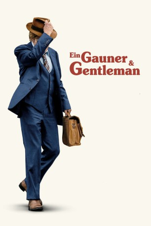

#11708 Ein Gauner & Gentleman
Alternativ: The Old Man & the Gun (Englischer Titel)
 
 IMDB-Wertung: 6.7 / 10
IMDB-Wertung: 6.7 / 10  Tomatometer: 93
Tomatometer: 93  Metascore: 80
Metascore: 80 
Den Großteil seines Lebens verbrachte Forrest Tucker hinter Schloss und Riegel. Weil er aber nicht bloß einer der besten Bankräuber ist, sondern gleichzeitig auch ein wahres Genie, wenn es um Gefängnisausbrüche geht, genießt der Berufsganove auch immer wieder die selbstgewonnene Freiheit. Selbst im legendären, in der Bucht von San Francisco liegenden Hochsicherheitsknast von Alcatraz konnten sie den Verbrecher nicht halten. Als dieser 1981 mit seinen Handlangern Teddy und Waller schließlich eine Bank nach der anderen ausraubt, lernt er nach einem Coup die Farmbesitzerin Jewel kennen, die mit ihrem Truck liegengeblieben ist. Alles läuft wie am Schnürchen für Tucker, bis der Polizist John Hurt als erster durchschaut, was es mit all den Überfällen der letzten Zeit auf sich hat: Ein und dieselbe Bande steckt dahinter! Tucker und seine Komplizen müssen sich von nun an also umso mehr in Acht nehmen, denn Hurt ist ihnen mit dank des neugewonnenen Wissens dicht auf den Fersen...
Jahr: 2018
Dauer: 93 Minuten
FSK: 6
Land: USA Studio: Fox Searchlight PicturesTonspuren: DTS - ,
Untertitel: Deutsch,
Auflösung: 1080p (1920x800) Größe: 9932 MB
Genre: Drama, Komödie, Krimi, Liebe, Biographie
Regisseur: David Lowery
Drehbuch: David Lowery, David Grann
Soundtrack: Daniel Hart
Darsteller:
 Robert Redford als Forrest Tucker
Robert Redford als Forrest Tucker Casey Affleck als John Hunt
Casey Affleck als John Hunt Sissy Spacek als Jewel
Sissy Spacek als Jewel Danny Glover als Teddy
Danny Glover als Teddy Tom Waits als Waller
Tom Waits als Waller Tika Sumpter als Maureen
Tika Sumpter als Maureen- Ari Elizabeth Johnson als Abilene
- Teagan Johnson als Tyler
 Gene Jones als Mr. Owens
Gene Jones als Mr. Owens- John David Washington als Lt. Kelly
- Barlow Jacobs als Offerman
- Augustine Frizzell als Sandra
- Jennifer Joplin als Martha
- Lisa DeRoberts als Helen the Teller
 Isiah Whitlock Jr. als Detective Gene Dentler
Isiah Whitlock Jr. als Detective Gene Dentler- Patrick Newall als Doctor
- Daniel Britt als Sheriff
- Leah Roberts als Dora the Waitress
 Elisabeth Moss als Dorothy
Elisabeth Moss als Dorothy Keith Carradine als Captain Calder
Keith Carradine als Captain Calder- Kevin McClatchy als Agent Morton
- Kenneisha Thompson als Kelly Lornin
 Robert Longstreet als Stephen Beckley, Jr., Esq.
Robert Longstreet als Stephen Beckley, Jr., Esq.- Clara Harris als Detective Wilson
- Jordan Trovillion als Angela the Teller
- Barry Mulholland als Husband
- Annie Fitzpatrick als Wife
 Christine Dye als Marla the Waitress
Christine Dye als Marla the Waitress- Jack Michael Doke als Forrest, Age 12
 Larry Jack Dotson als Manager #1
Larry Jack Dotson als Manager #1 Pam Dougherty als Manager #2
Pam Dougherty als Manager #2- Marissa Woolf als Raquel
- Todd Terry als FBI Agent
- Felicia Andes als Bank Patron (uncredited)
 Mark Angel als Driver / Pedestrian (uncredited)
Mark Angel als Driver / Pedestrian (uncredited)- Aqeel Ash-Shakoor als Prison Guard (uncredited)
- Denise Barone als Older Lady at Mall (uncredited)
 Judy McQueen Bauer als Bank Patron (uncredited)
Judy McQueen Bauer als Bank Patron (uncredited) Anita Farmer Bergman als Theater Patron (uncredited)
Anita Farmer Bergman als Theater Patron (uncredited)- Michael W. Bunch als Dallas Police Officer (uncredited)
 William Cross als Bank Employee (uncredited)
William Cross als Bank Employee (uncredited)- Bobby Easley als Diner (uncredited)
 Reese Foster als Prisoner (uncredited)
Reese Foster als Prisoner (uncredited)- John French als Dallas Bank Patron (uncredited)
- Tristan Alijah Garcia als Boy Painter (uncredited)
- Jason Marcus Griffith als FBI agent (uncredited)
- Chris Hahn als Prison Guard (uncredited)
- Al Harland als Banker M Reuter (uncredited)
- Ray Nicholas Hosack als FBI Agent (uncredited)
- Zach Kaltenbach als Bank Patron (uncredited)
Datei: X:\2018(G-M)\Gauner & Gentleman, Ein (2018, FSK6, 1920x800).mkv seit 14.09.2019
Festplatte: HD 2018(G-Z)-2019(A-Z)
 Es gibt insgesamt 138 Filme in der Gruppe '2018(G-M)'
Es gibt insgesamt 138 Filme in der Gruppe '2018(G-M)'